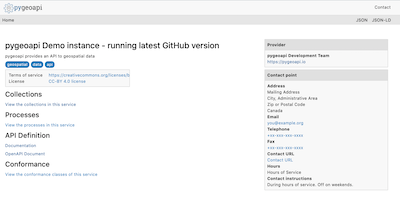

pygeoapi¶
Web Service¶
pygeoapi is a Python server implementation of the OGC API suite of standards. The project emerged as part of the next generation OGC API efforts in 2018 and provides the capability for organizations to deploy a RESTful OGC API endpoint using OpenAPI, GeoJSON, and HTML. pygeoapi is open source and released under an MIT license.
{kind=link}
Core Features¶
- out of the box modern OGC API server
- certified OGC Compliant and Reference Implementation for OGC API - Features
- additionally implements OGC API - Coverages, OGC API - Tiles, OGC API - Processes and SpatioTemporal Asset Library
- out of the box data provider plugins for rasterio, GDAL/OGR, Elasticsearch, PostgreSQL/PostGIS
- easy to use OpenAPI / Swagger documentation for developers
- supports JSON, GeoJSON, HTML and CSV output
- supports data filtering by spatial, temporal or attribute queries
- easy to install: install a full implementation via
piporgit - simple YAML configuration
- easy to deploy: via UbuntuGIS or the official Docker image
- flexible: built on a robust plugin framework to build custom data connections, formats and processes
- supports any Python web framework (included are Flask [default], Starlette)
Implemented Standards¶
Standards are at the core of pygeoapi. Below is the project’s standards support matrix.
- Implementing: implements standard (good)
- Compliant: conforms to OGC compliance requirements (great)
- Reference Implementation: provides a reference for the standard (awesome!)
| Standard | Support |
|---|---|
| OGC API - Features | Reference Implementation |
| OGC API - Coverages | Implementing |
| OGC API - Tiles | Implementing |
| OGC API - Processes | Implementing |
| SpatioTemporal Asset Catalog | Implementing |
Details¶
Website: https://pygeoapi.io/
Licence: MIT
Software Version: 0.8.0
Supported Platforms: Windows, Linux, Mac
API Interfaces: Python
Support: OSGeo service providers